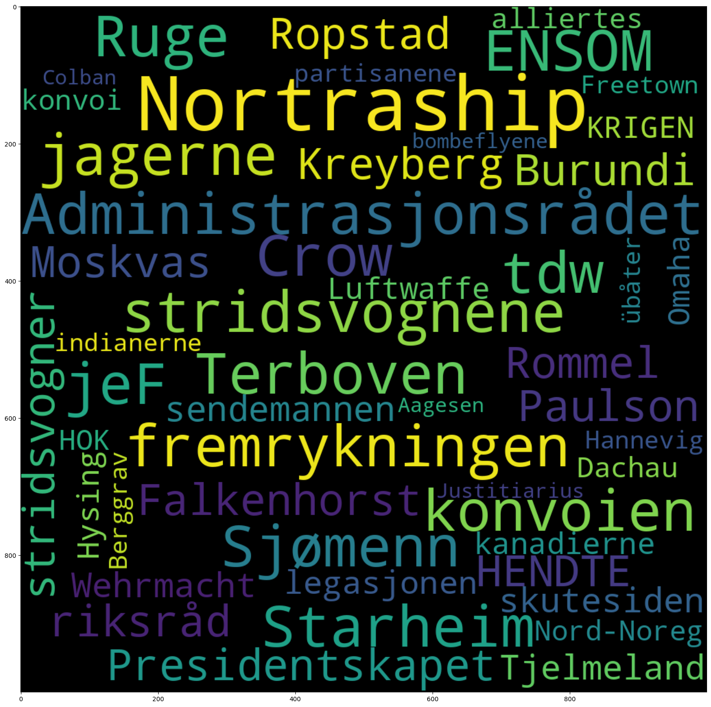

1.9. Sammenlign metadata#
from dhlab.api.dhlab_api import get_document_frequencies
from dhlab import Corpus, Counts, totals
from dhlab import nbtext as nb
1.9.1. Undersøk korpus med metadata#
En viktig metode i undersøkelse av metadata og tekster er grafer og nettverk.
Metadata er alt som er om teksten, fra forfatter til forlag. Også innholdsord kan sees på som metadata.
1.9.1.1. Bygg korpus#
Korpuset defineres med metadata som dewey, emneord, navn , år, etc. Her kan Webdewey være til god hjelp.
Se eksempelfil om Korpusbygging for ulike måter å definere korpus.
bøker = Corpus(
doctype="digibok",
freetext="krig OR krigen OR soldater",
from_year=1950,
to_year=2010,
ddk="9*",
lang='nob',
limit=30
)
bøker.frame.loc[:, ["title", "authors", "year"]]
| title | authors | year | |
|---|---|---|---|
| 0 | Det hendte under krigen : en familiefortelling- | Wiksaas , Arnfinn | 2008 |
| 1 | Ulvetiden : krig og samarbeid | Fjørtoft , Kjell | 1990 |
| 2 | En bondegård opplever krigen | Steine , Martha | 1980 |
| 3 | Ensom krig mot Gestapo | Skogen , Olav | 2009 |
| 4 | Kast ikke kortene : i sanitetet- og utenfor , ... | Kreyberg , Leiv | 1978 |
| 5 | Inger Gulbrandsen : ungdomstid i fangeleir | Lund , Maria Konow / Myhr , Eirik | 1998 |
| 6 | Spenningenes land : Nord-Norge etter 1945 | Lorås , Jostein / Lorås , Jostein | 1997 |
| 7 | Kryssild : mitt liv som flyktning : Burundi - ... | Ngendakurio , John Bosco / Holmedahl , Jostein | 2009 |
| 8 | D-dagen : den allierte invasjonen i Normandie ... | Tamelander , Michael / Zetterling , Niklas / R... | 2007 |
| 9 | Moskva 1941 : en by i krig | Braithwaite , Rodric / Carlsen , Carsten | 2007 |
| 10 | Sjømenn i krig : krigsseilere forteller | Wilhelmsen , Aage A. ( Aage Adolf ) | 2007 |
| 11 | Ti i krig | Taraldsen , Kristen | 1998 |
| 12 | Kampen om Norge : tyskernes bilder fra det nor... | Olsen , Per Erik | 2008 |
| 13 | Stråler fra asken | Jungk , Robert / Hagerup , Anders | 1960 |
| 14 | Etterkrigshistorie : emner fra norsk historie ... | 1973 | |
| 15 | 1940 : fra nøytral til okkupert | Paulsen , Helge | 1969 |
| 16 | Vardan og armenernes krig | Eghishē / Lindeman , Fredrik Otto | 1992 |
| 17 | En bedre dag i morgen : en barnesoldat forteller | Beah , Ishmael / Hidle , Mie | 2007 |
| 18 | Handelsflåten i krig 1939-1945 | Nilsen , Tore L. / Thowsen , Atle | 1990 |
| 19 | Balkan-ekspressen : fragmenter fra den andre s... | Drakulić , Slavenka / Henriksen , Ginni Schuls... | 1994 |
| 20 | Partisanen | Hirsti , Reidar | 1990 |
| 21 | Krigen mot siouxene : nordmenn mot indianere 1... | Skarstein , Karl Jakob | 2005 |
| 22 | En historiebok om Levanger : fortellinger , in... | Eklo , Asbjørn D. K. | 2007 |
| 23 | De historiske hendelsene i Moss i 1814 : krig ... | Edfeldt , Per | 2004 |
| 24 | Berlevåg i krig og fred : fra okkupasjon og ru... | Bergheim , Geir | 1994 |
| 25 | Barn av Hiroshima | Vesaas , Halldis Moren / Osada , Arata / Roalk... | 1982 |
| 26 | Sjøfolk i krig : haugalendinger ser tilbake - ... | Bjørkelund , Leif M. | 1995 |
| 27 | Krigen og Fyllingsdalen 1940-1945 | Kvinge , Kåre / Hemmingsen , Jan | 2001 |
| 28 | Krigen i Norge 1940 | Christophersen , Bjørn | 1965 |
| 29 | 830 S : med illegal avlytting og sikringstjene... | Kristoffersen , Terje | 2006 |
1.9.1.2. Undersøk forskjeller#
1.9.1.2.1. Undersøk forskjeller internt i korpuset#
Her samler vi sammen alle bøkene i korpus og summerer. Men først la oss se på en del av korpuset som en dokument term matrise
# tar de fem første og henter frekvensene for alle bøkene
bøker_dtm = Counts(bøker.head(5))
bøker_dtm
| 100525957 | 100464888 | 100141056 | 100159643 | 100287961 | |
|---|---|---|---|---|---|
| . | 3721 | 10545 | 1874 | 2601 | 958 |
| , | 3110 | 3434 | 2475 | 2165 | 1021 |
| og | 2176 | 3284 | 1795 | 1784 | 655 |
| i | 1658 | 3653 | 1017 | 1286 | 334 |
| var | 1199 | 551 | 1063 | 1184 | 476 |
| ... | ... | ... | ... | ... | ... |
| overlevering | 0 | 0 | 0 | 1 | 0 |
| troppssjef | 0 | 0 | 0 | 4 | 0 |
| tolvårsrikets | 0 | 0 | 0 | 1 | 0 |
| stårkt | 0 | 1 | 0 | 0 | 0 |
| Holand | 0 | 0 | 2 | 0 | 0 |
33629 rows × 5 columns
1.9.1.2.2. Visualiser med varmekart#
Et varmekart gjør det enklere å få øye på likhet og variasjon i tallene.
nb.heatmap(bøker_dtm.frame.head(10), color="#045599")
| 100525957 | 100464888 | 100141056 | 100159643 | 100287961 | |
|---|---|---|---|---|---|
| . | 3721 | 10545 | 1874 | 2601 | 958 |
| , | 3110 | 3434 | 2475 | 2165 | 1021 |
| og | 2176 | 3284 | 1795 | 1784 | 655 |
| i | 1658 | 3653 | 1017 | 1286 | 334 |
| var | 1199 | 551 | 1063 | 1184 | 476 |
| til | 1161 | 2740 | 678 | 901 | 216 |
| av | 1134 | 1944 | 538 | 737 | 154 |
| som | 1019 | 2710 | 752 | 906 | 286 |
| en | 996 | 1599 | 889 | 737 | 217 |
| det | 927 | 2813 | 1010 | 1002 | 520 |
1.9.1.3. Undersøk forskjeller med frekvenser fra bokhylla#
Vi teller opp tokens i korpuset med Counts. Dette kan ta litt tid.
count_corpus = Counts(bøker)
Referansekorpus Kommandoen under lager et referansekorpus av de 150 000 vanligste tokenene i vår samling.
totals = totals(150000)
# Summer tokens fra korpus
bøker_total = count_corpus.frame.sum(1).to_frame("count")
# Frekvensliste for korpus
bøker_total
| count | |
|---|---|
| . | 115180 |
| , | 83655 |
| ^ | 1759 |
| i | 50124 |
| en | 24321 |
| ... | ... |
| nazi-stat | 1 |
| stormester | 1 |
| Lyngard | 1 |
| koordineringen | 2 |
| Arbeidsløsheten | 1 |
123083 rows × 1 columns
For å lette arbeidet med å tolke forskjeller normaliserer vi frekvensene til tall mellom 0 og 1.
nb.normalize_corpus_dataframe(totals)
nb.normalize_corpus_dataframe(bøker_total)
True
forskjell = bøker_total.loc[:, "count"] / totals.freq
bøker_typiske_ord = forskjell.sort_values(ascending=False).to_frame("ratio")
bøker_typiske_ord.head(50)
| ratio | |
|---|---|
| Nortraship | 374.177225 |
| Administrasjonsrådet | 361.652298 |
| stridsvognene | 212.685583 |
| fremrykningen | 192.429317 |
| Sjømenn | 181.864313 |
| Ruge | 151.520184 |
| jeF | 140.540655 |
| Terboven | 135.436769 |
| Starheim | 128.311689 |
| tdw | 123.630821 |
| konvoien | 121.383054 |
| jagerne | 117.36657 |
| ENSOM | 116.470445 |
| Crow | 115.579853 |
| Presidentskapet | 115.547847 |
| Ropstad | 105.735748 |
| HENDTE | 105.718891 |
| stridsvogner | 102.321627 |
| Kreyberg | 101.918331 |
| Falkenhorst | 101.524668 |
| Paulson | 96.547861 |
| Moskvas | 94.179596 |
| Burundi | 93.361429 |
| Rommel | 92.81173 |
| riksråd | 92.649391 |
| sendemannen | 92.361771 |
| skutesiden | 91.523627 |
| Wehrmacht | 90.437751 |
| Tjelmeland | 89.286192 |
| legasjonen | 88.282819 |
| kanadierne | 86.660885 |
| Hysing | 86.202029 |
| Luftwaffe | 85.847187 |
| KRIGEN | 85.03972 |
| Omaha | 84.699097 |
| Nord-Noreg | 84.234978 |
| HOK | 83.743131 |
| alliertes | 81.394871 |
| konvoi | 80.885071 |
| Dachau | 79.425375 |
| partisanene | 77.919277 |
| übåter | 77.775187 |
| indianerne | 74.933973 |
| Hannevig | 74.610472 |
| Berggrav | 74.589971 |
| Freetown | 73.805431 |
| bombeflyene | 73.550555 |
| Aagesen | 71.46604 |
| Justitiarius | 71.060352 |
| Colban | 69.728015 |
1.9.2. Visualiser som ordsky#
nb.cloud((bøker_typiske_ord/bøker_typiske_ord.sum()).head(50))
